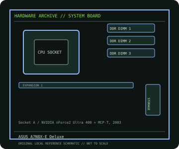

[ INDIVIDUAL COMPONENT // MOTHERBOARDS ]
ASUS A7N8X-E Deluxe
A7N8X-E Deluxe: Socket A / NVIDIA nForce2 Ultra 400 + MCP-T, 2003; revision-aware Socket motherboard specifications, CPU/BIOS qualification, board size, memory, expansion, storage and I/O.

IDENTIFICATION: ASUS model designation; board revision is PCB-marked and should be verified on the individual board. Confirm the exact silkscreen, revision and firmware on the physical board; near-name variants can use different BIOS files and connectors.
Specifications
| Catalog subcategory | AMD Socket platforms |
|---|---|
| Exact board / model | A7N8X-E Deluxe — ASUS model designation; board revision is PCB-marked and should be verified on the individual board |
| Platform and chipset | Socket A / NVIDIA nForce2 Ultra 400 + MCP-T, 2003; NVIDIA nForce2 Ultra 400 northbridge with MCP-T southbridge. |
| CPU and BIOS support | Socket A (462); Athlon XP, Athlon and Duron families listed by ASUS, subject to exact CPU and BIOS support-table entries. |
| Memory | Three 184-pin DDR DIMM sockets; dual-channel DDR400/333/266, up to 3 GB (unbuffered, non-ECC). |
| Board size / form factor | ATX, 305 × 244 mm. |
| Expansion and storage | One AGP 8X slot and five PCI slots. Two PATA channels and two Serial ATA 1.5 Gb/s ports; use the manual for RAID/controller details. |
| Rear I/O and compatibility | Dual LAN controllers, 6-channel audio, four rear USB 2.0 ports plus board headers, PS/2, parallel/serial, audio and optical S/PDIF connectors. No onboard display output; graphics require a compatible AGP card. Socket-A cooler and AGP card required. Confirm the supported Athlon XP/FSB combination and minimum BIOS in the exact ASUS CPU table; use DDR memory and observe DIMM pairing instructions. |
Compatibility and revision notes
Socket-A cooler and AGP card required. Confirm the supported Athlon XP/FSB combination and minimum BIOS in the exact ASUS CPU table; use DDR memory and observe DIMM pairing instructions.
Before installation, compare the physical board and revision against the manufacturer manual. Check socket condition, CPU power requirements, cooler/chassis clearance, DIMM population order, power connectors and any shared PCIe or SATA lanes. Update firmware only with the exact model’s supported procedure.
Preservation and repair
Record the PCB revision, BIOS identifier, serial/date code, installed CPU and memory, accessories, known faults, repairs and test conditions. Use ESD-safe handling and inspect for socket damage, corrosion, leaking capacitors and loose conductive hardware before power-up.
Sources & further reading
- ASUS A7N8X-E Deluxe manuals and supportManufacturer support index and official model documentation.
- ASUS A7N8X-E Deluxe CPU supportManufacturer CPU compatibility resource; verify processor and BIOS qualification for the individual board.
Manufacturer documentation is authoritative for supported CPUs, minimum BIOS, memory qualification and revision-specific wiring. Do not transfer compatibility claims or firmware between similar model names.